Créer et versionner un dossier avec Github
create_new_versioning_folder.RmdCette vignette permet de suivre les étapes à la création d’un repo (dossier) versionné avec Github.
Première étape: créer un repo sur Github
Se rendre sur Github puis créer un nouveau répertoire (repository) :
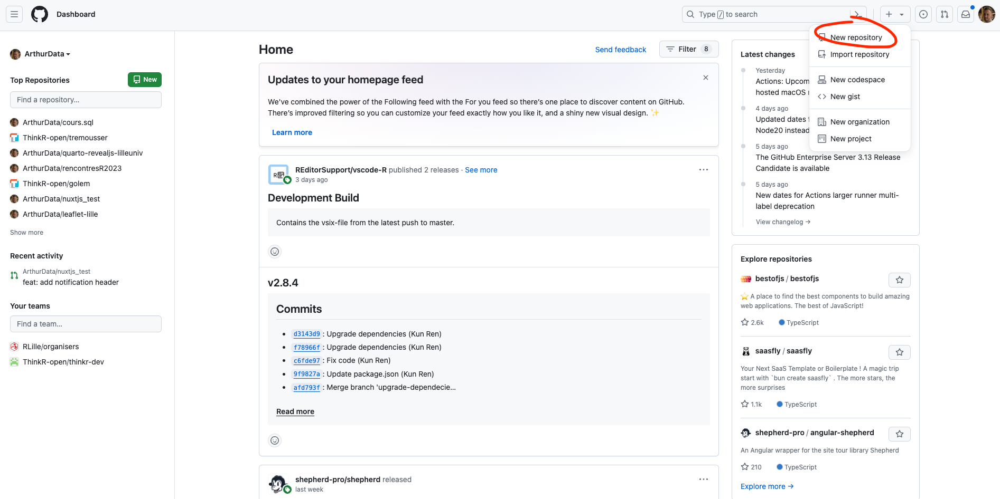 Sur cette nouvelle page, nous allons renseigner les informations concernant le repo.
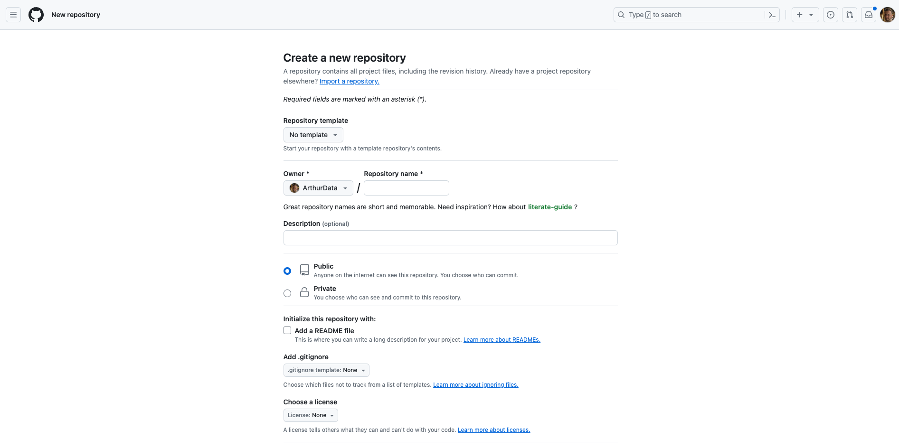
Pour celà, il faudra :
-
Donner un nom au repo : Pour faire la distinction entre le repo qui contient la carte pour le questionnaire, de celui qui contient le rapport, nous recommandons la convention suivante:
[city]_survey_map (ex : lille_survey_map) : nom du repo qui contient la carte pour le questionnaire
[city]_report_map (ex: lille_report_map) : nom du repo qui contient le rapport
Une description peut, éventuellement, être ajoutée.
Le repo doit être en public afin de pouvoir publier la page qui contiendra la carte.
Laissez décochées le reste des informations.
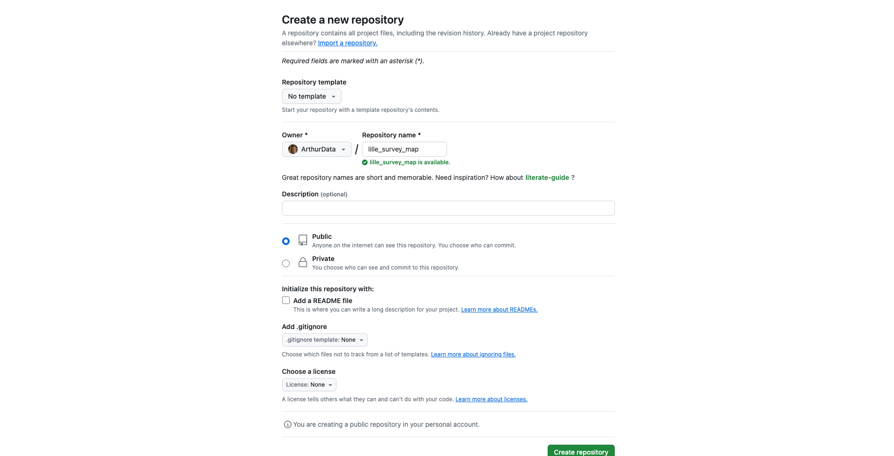
Une fois toutes les informations saisies, cliquer sur le bouton de création.
Deuxième étape: cloner le repo sur Rstudio
Sur cette nouvelle page, nous allons récupérer l’url du nouveau projet :
Copier le lien HTTPS du repo :
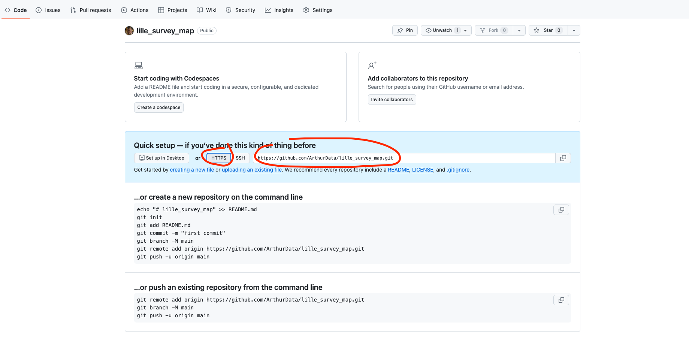 Une fois le lien copié, se rendre sur Rstudio et créer un nouveau projet :
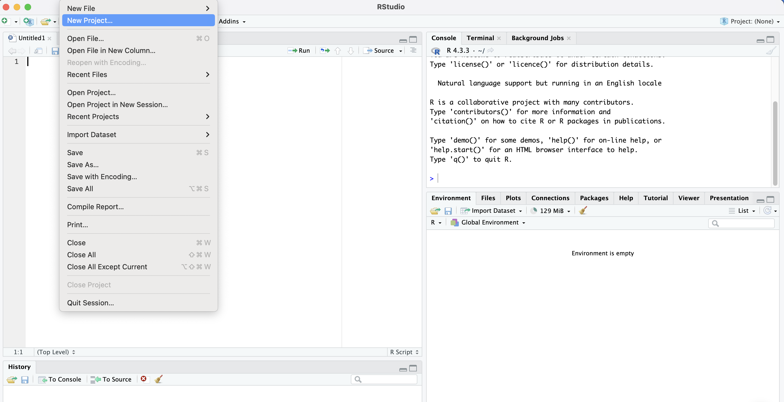
Sur la prochaine interface, choisir Version Control
:
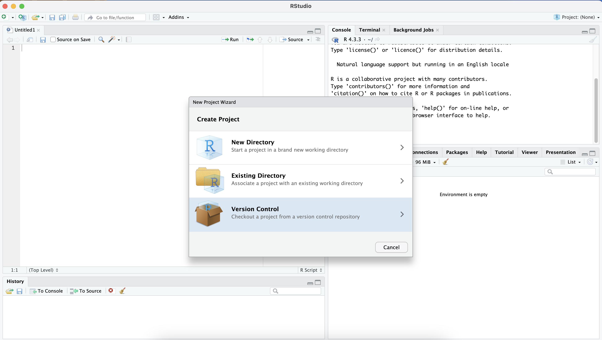
Puis choisir Git :
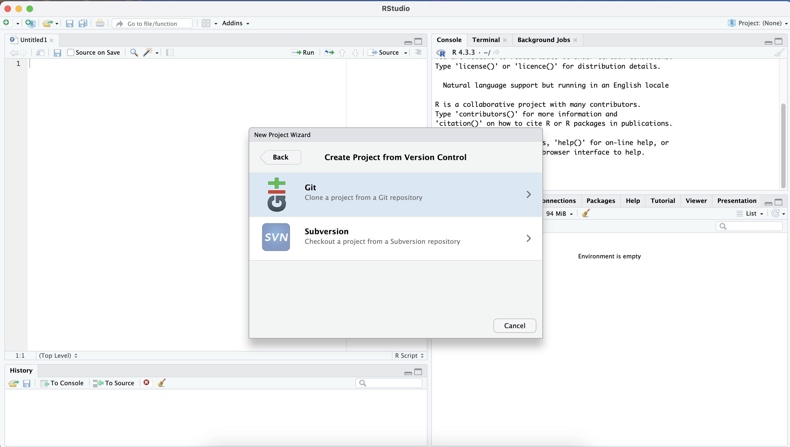
Coller le lien du projet dans Repository URL :
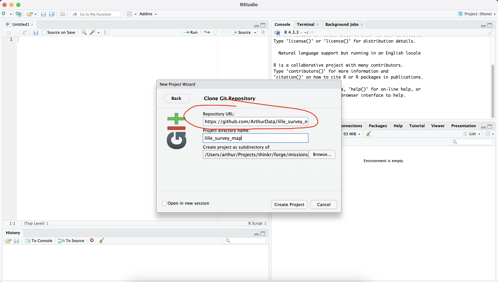 Puis cliquez sur Create project. La
session Rstudio va redémarrer à l’intérieur du projet :
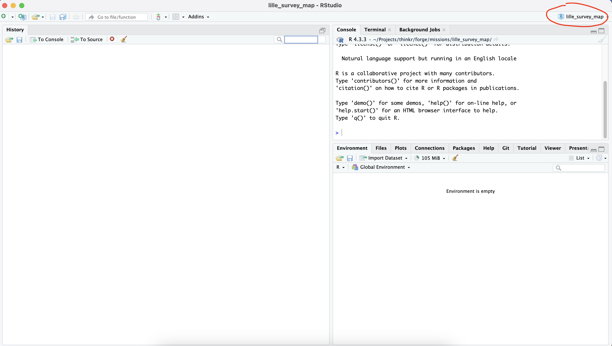
Troisième étape: envoyer sur Github les modificiations
Dans le Panel Git, cliquez sur le bouton
Diff :
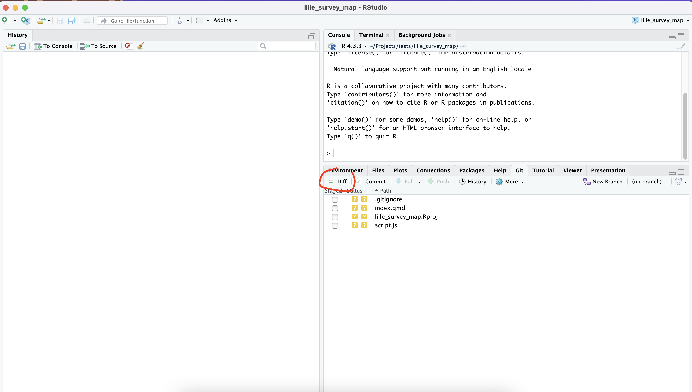 Cochez l’ensemble des fichiers à envoyer sur Github.
Ajoutez un message de commit puis cliquez sur le bouton
commit.
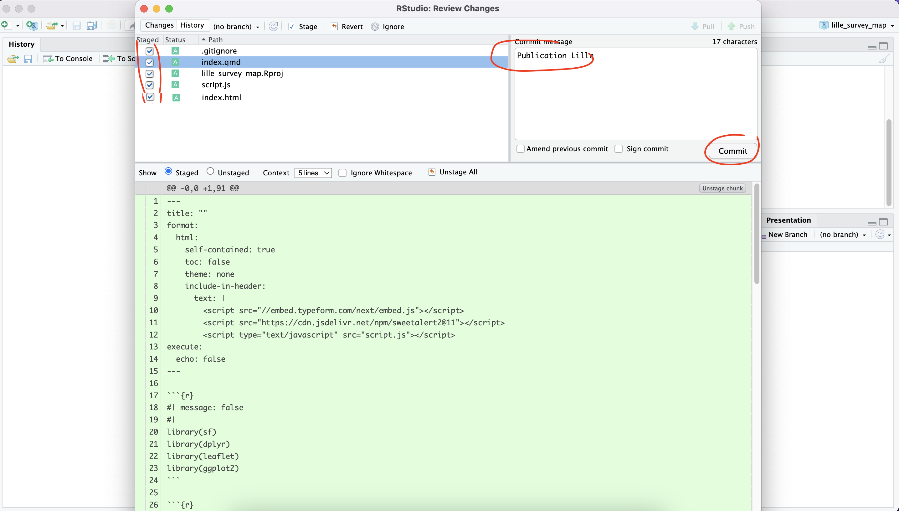
Ensuite, cliquez sur le bouton push. Une fenêtre de
confirmation doit s’ouvrir.
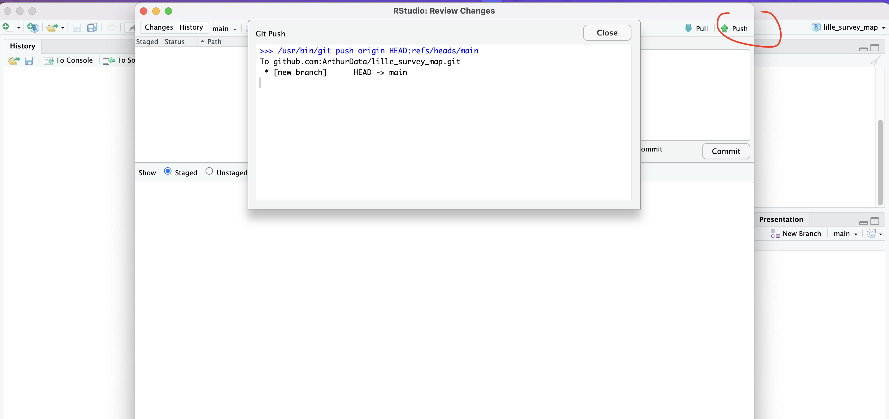
La liste des fichiers envoyés doit être visible sur le Github du projet.
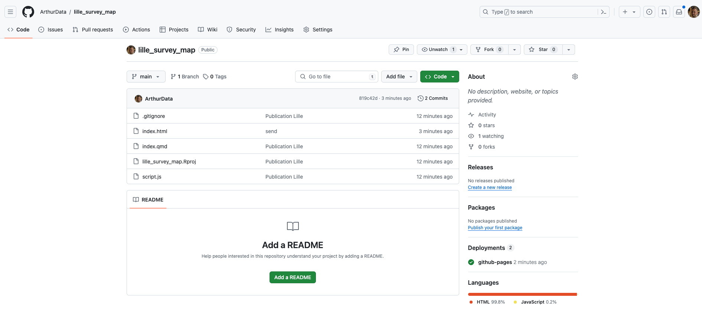
Quatrième étape : déployer sur Github
Se rendre sur Github, puis dans
l’onglet Settings et dans le menu Pages :
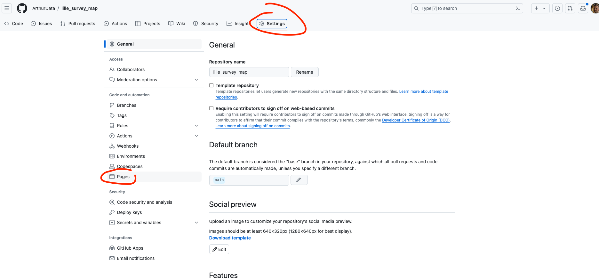
Sélectionner la branche main puis root
:
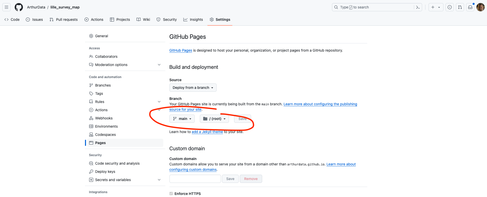 Patientez 5 minutes avant la mise en ligne du fichier. Rafraîchir la page si besoin :
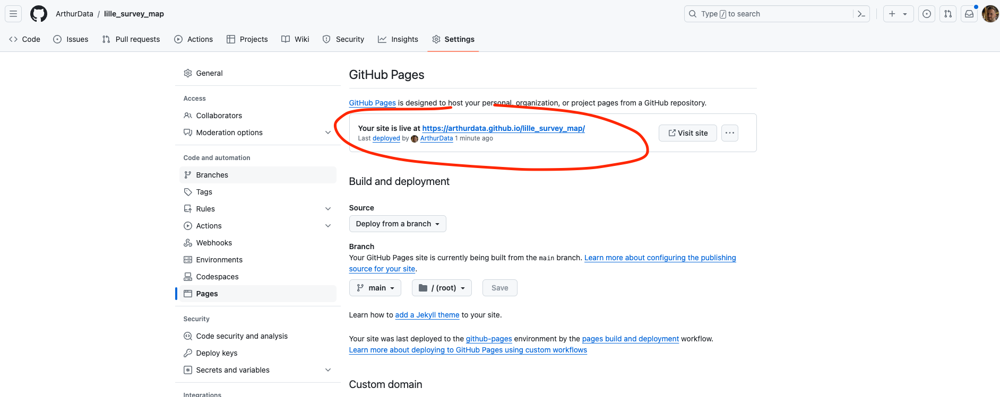 Le fichier doit être accessible sur l’url indiquée par Github.